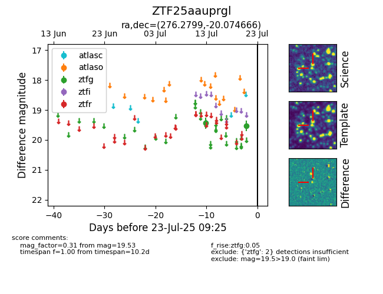

Target ZTF25aauprgl at 2025-07-23 12:37, see:
FINK: fink-portal.org/ZTF25aauprgl
Lasair: lasair-ztf.lsst.ac.uk/objects/ZTF25aauprgl
ALeRCE: alerce.online/object/ZTF25aauprgl
alt names
ZTF25aauprgl (ztf,fink)
coordinates:
equatorial (ra, dec) = (276.2799,-20.07467)
galactic (l, b) = (12.1254,-3.48185)
photometry
last ztfg=19.53
2 ztfg detections
